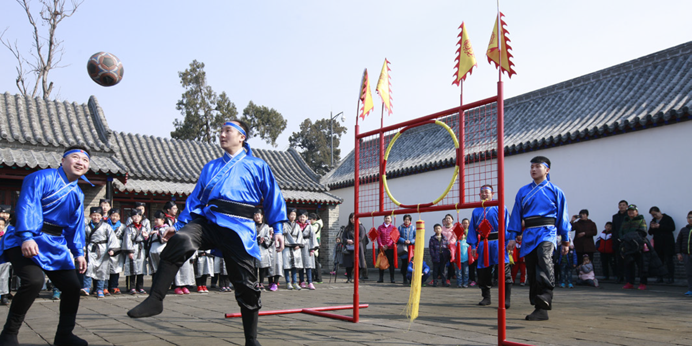

Football, known globally as the “beautiful game,” has a long and fascinating history that stretches back thousands of years. While the modern version of the sport is strongly associated with England, early forms of football existed in ancient civilizations such as China, Greece, and Rome. One of the earliest known games was “Cuju” in ancient China, where players kicked a ball through a net without using their hands. Similarly, the Greeks and Romans played ball games that involved kicking and carrying, though these were often far more violent and less structured than today’s game. During the Middle Ages in Europe, versions of football were played in villages, often with very few rules and large numbers of participants, leading to chaotic and sometimes dangerous matches. It wasn’t until the 19th century that football began to take a more organised form, particularly in English schools and universities, where different versions of the game started to develop with clearer rules. The turning point in football’s history came in 1863 with the formation of The Football Association in England. This organisation established the first official rules of the game, separating football from rugby and creating the foundation for modern soccer. From there, the sport rapidly spread across Europe and the rest of the world, carried by trade, colonisation, and growing international interest. The creation of FIFA in 1904 marked another major milestone, as it unified national associations and introduced global competitions. The first FIFA World Cup in 1930 transformed football into a truly international spectacle, capturing the attention of millions and establishing the sport as a global phenomenon. Over time, professional leagues developed, stadiums grew larger, and players became international celebrities, turning football into both a sport and a massive industry. In the modern era, football continues to evolve while maintaining its core simplicity—two teams, one ball, and the objective to score. Advances in technology, such as VAR (Video Assistant Referee), have changed how the game is officiated, while tactics and athleticism have reached new levels of sophistication. Leagues like the Premier League and tournaments like the UEFA Champions League showcase the highest level of competition, attracting global audiences and generating billions in revenue. Players such as Lionel Messi and Cristiano Ronaldo have become icons of the modern game, inspiring millions with their skill and dedication. Despite all the changes, football’s universal appeal remains the same—it is a game that transcends language, culture, and background, uniting people around the world through a shared passion that began centuries ago and continues to grow stronger today.